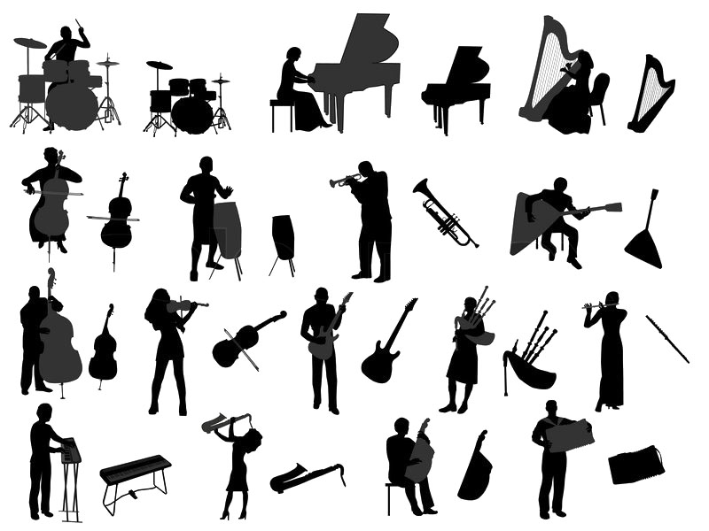
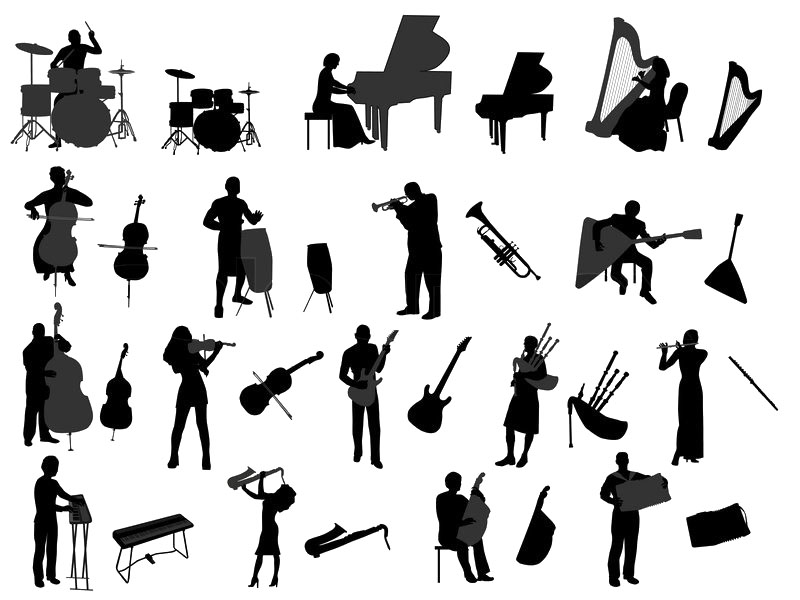

Hobby Website
This is one of the first projects I did in PLTW CSE. Albert and I created an online Musical Instrument Encyclopedia. You can access it by clicking here.
This is one of the first projects I did in PLTW CSE. Albert and I created an online Musical Instrument Encyclopedia. You can access it by clicking here.
